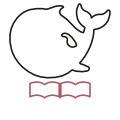
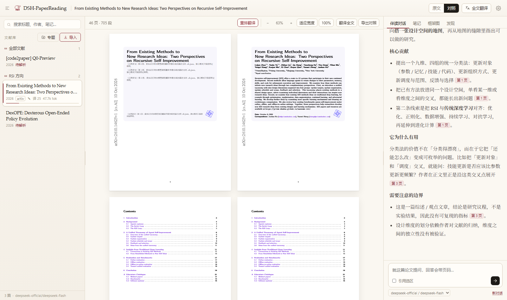
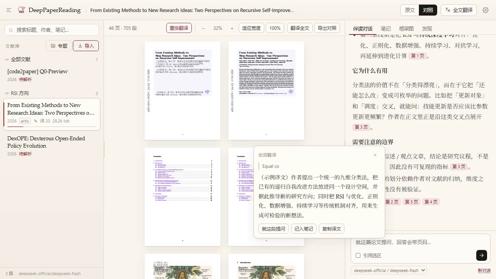

DSH-PaperReading 把 PDF、翻译、对话、笔记收进 DeepSeek Harness 的一个侧栏： 左边中文页、右边原版页逐页对照，划词就出译文，对话回答带页码可以跳回原文。
不需要 npm 账号，直接从 GitHub 装。
dsh plugin --profile web add github:wuke-luke/DSH-PaperReading
下载 tarball 后本地安装，国内可用 jsDelivr CDN。
# CDN（国内较快）
curl -LO https://cdn.jsdelivr.net/gh/wuke-luke/DSH-PaperReading@master/dist/dsh-paperreading-0.6.4.tgz
dsh plugin --profile web add ./dsh-paperreading-0.6.4.tgz
dshmarket → 发现，搜索 DSH-PaperReading（条目审核中）。
本地 PDF、arXiv 编号或链接，拖进去。
左中文 / 右原版，版式跟着原文走。
选中一句，光标旁出译文。
回答带 [p.12]，点了跳原文。
每篇论文独立保存。
本地 / WebDAV / Drive / 百度网盘；按论文记 token。

